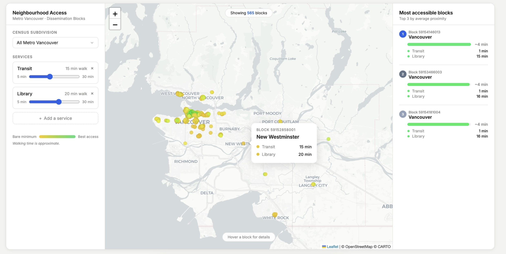

Not all communities have the same level of access to everyday services. The proximity index measures how close people are to essential amenities, helping us compare accessibility across places. We converted this into estimated walking times to make accessibility easier to understand.
People in areas with a high proximity index can access more services, more quickly, while those in areas with a lower index may face longer travel times and fewer nearby options.
If you were a student, how important would it be to have a grocery store within walking distance while balancing school, transit, and everyday activities?
The proximity index determines how much access to certain services you get. Scroll to transition from the most accessible division overall to the least accessible division overall in British Columbia.
Even though Vancouver stands out for its diverse community and high accessibility ranking across the amenities, some smaller communities may provide just as much access.
The top 10 accessibility outliers are labeled in the chart.
British Columbia Regions — Weekly minutes spent accessing essential services
0.8–1.0: 5 min/trip 0.5–0.8: 15 min/trip 0.2–0.5: 30 min/trip 0.0–0.2: 55 min/trip
Data source: Statistics Canada Proximity Measures Database (PMD-en.csv). Services shown: Grocery, Transit, Healthcare, Parks.
I care most about:
placeholder!
